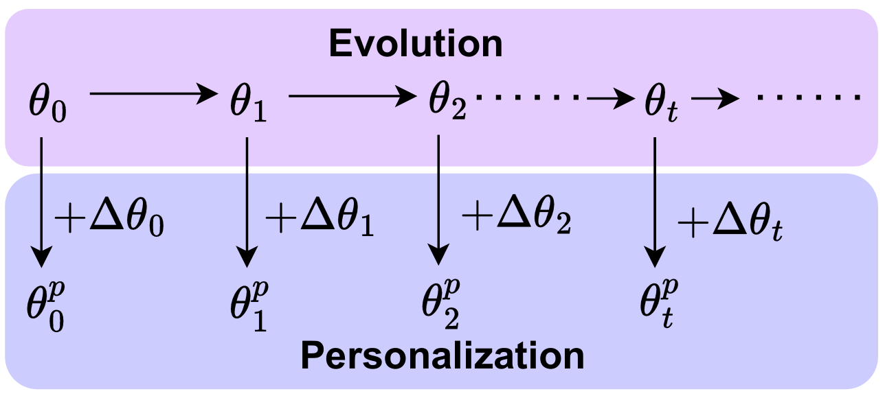
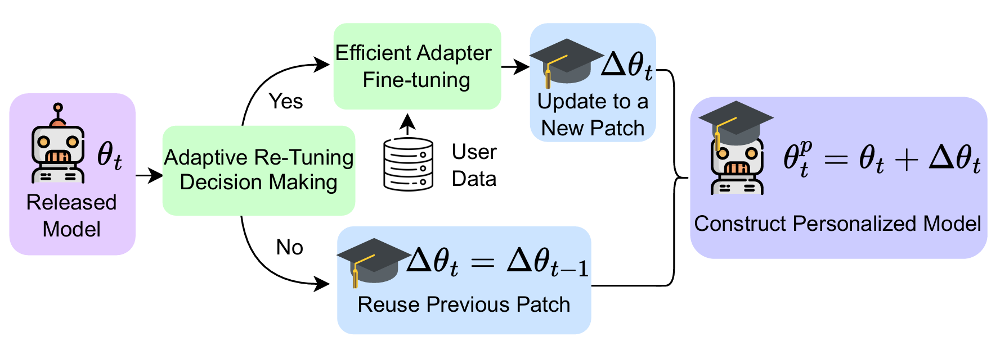
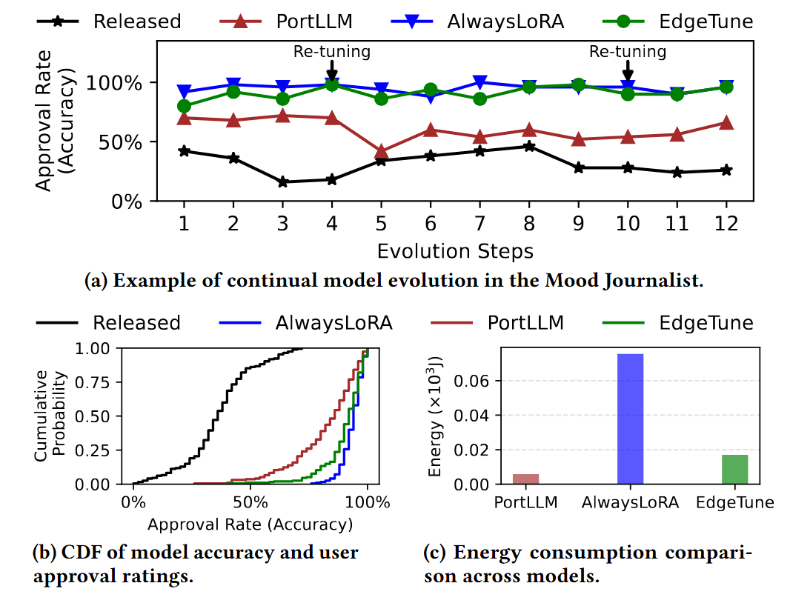

EdgeTune is an on-device LLM personalization framework designed for resource-constrained edge devices such as smartphones and embedded GPUs. While edge-scale LLMs can already run locally, adapting them to a user's private data remains expensive because LoRA reduces the number of trainable parameters but still requires substantial backward computation through the backbone.
To address this challenge, EdgeTune combines two complementary ideas. GradCut reduces unnecessary adaptation cost by identifying which matrices deserve dedicated adapters, which can share adapters, and which can be skipped. On top of that, EdgeTune adds an adaptive reuse-or-re-tune strategy that decides whether a previously trained patch can be safely reused for a newly downloaded model release, or whether retuning is actually necessary.
These two modules reduce the amortized cost of continual on-device personalization while preserving the accuracy of always-fine-tune baselines. The framework is modular, model-agnostic, and designed to fit practical edge deployment settings where privacy, latency, and energy all matter.


GradCut is the adapter fine-tuning module in EdgeTune. Instead of attaching LoRA everywhere with the same treatment, GradCut scores weight matrices using an importance-aware benefit-per-cost metric. Based on that score, a matrix can receive a dedicated adapter, share an adapter with lower-value matrices, or receive no adapter at all. This keeps computation focused on the most useful update paths and cuts unnecessary overhead during personalization.
The Adaptive Re-tuning Strategy handles continual model evolution. When a new cloud model release arrives, EdgeTune does not immediately assume the old patch is obsolete. Instead, it performs a lightweight, data-free compatibility check using patch-conditioned drift and a patch-tied indicator. If the old patch is still compatible, EdgeTune reuses it. If not, the framework triggers a budgeted retune. This reuse-or-re-tune decision is what allows EdgeTune to save substantial energy and time across long sequences of model updates.
For example, we build an application---Mood Journal---that records short journal entries provided as typed text or speech and uses a personalized LLM to infer the user’s underlying mood together with contextual information. As model releases evolve, stale patches cause personalization drift and reduce user approval. EdgeTune identifies when that drift becomes harmful and selectively retunes only when necessary, allowing it to stay close to the always-fine-tune reference while avoiding many unnecessary updates.
EdgeTune achieves higher user approval than PortLLM, performs substantially fewer retuning updates, and reduces energy compared with the always-retune baseline. As shown in the following figure, it highlighs the core idea of EdgeTune---to preserve personalization quality while lowering the amortized cost of continual on-device adaptation. For more details, please refer to the paper.

This work was supported, in part, by grants NSF EAGER NAIRR Pilot 2503073 (PI Nirjon) and NSF CAREER 2047461 (PI Nirjon).
@inproceedings{wang2026edgetune,
title={EdgeTune: Efficient On-Device LLM Personalization at the Edge},
author={Wang, Zhenyu and Khan, Rana Muhammad Shahroz and Chen, Tianlong and Nirjon, Shahriar},
booktitle={Proceedings of the 24th ACM/IEEE International Conference on Embedded Artificial Intelligence and Sensing Systems},
year={2026}
}